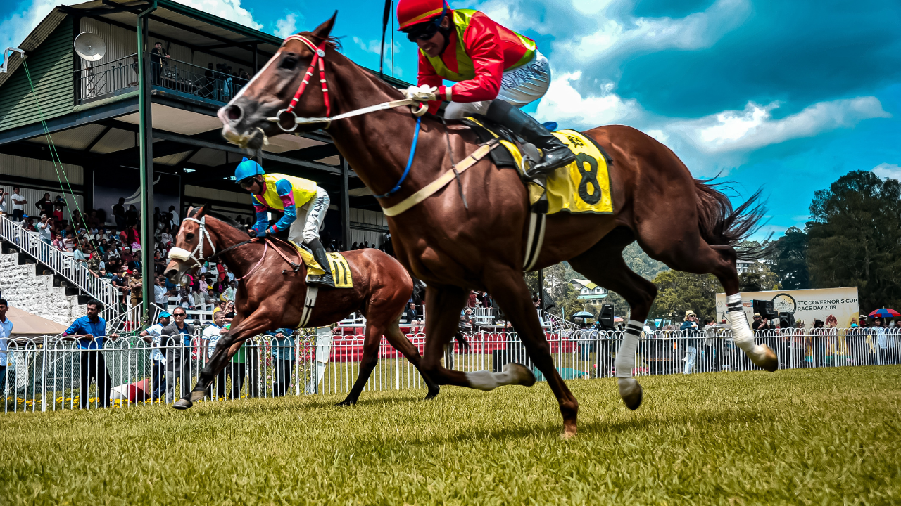

Hippodrome
Auteuil
Discipline
Haies
Distance
3900m
Corde
Gauche
Partants
16
Dotation
98 000€
| N° | Cheval | Driver | Cote |
|---|---|---|---|
| 1 | ROCK AND ROLL | Ubeda D. | 7 |
| 2 | BLUE BORANA | Zuliani A. | 5 |
| 3 | MAGIC FLIGHT | Boisnard J. | 15 |
| 4 | ROBIN HILL | Reveley J. | 11 |
| 5 | INTERDIT DE JEU | Duchene P. | 28 |
| 6 | KEL STORY | Philipperon L. | 20 |
| 7 | LOU FAST | Blot B. | 32 |
| 8 | SHAZAM | Nabet K. | 13 |
| 9 | NARUTO | Merienne A. | 18 |
| 10 | GALANT DABA | Zuliani L. | 8 |
| 11 | THE MUST | Le Clerc B. | 23 |
| 12 | CHANT DE GARDE | Beaurain T. | 7 |
| 13 | JUMPER BAIE | Ferreira N. | 9 |
| 14 | DARLIDA | Gourdon J. | 40 |
| 15 | MOSSY WALSH | Cottin D. | 35 |
| 16 | PREZIENNE DU LARGE | Desoutter M. | 45 |
Deux victoires consécutives et une régularité remarquable dans les haies. Poids de 67,5 kilos, un avantage considérable dans ce lot. Finit fort sur 3900m. Jamais déçu à Auteuil. À 23/1, le meilleur rapport qualité-prix.
Le favori logique, préparé par Gabriel Leenders. Deux victoires consécutives après un retour de blessure. Connaît parfaitement Auteuil. Seul bémol : ses 72 kilos qui pourraient peser dans les derniers mètres.
Régularité remarquable dans les handicaps : jamais au-delà de la sixième place sur ses 5 dernières sorties. Poids de 66 kilos parfaitement dosé, plus de 6 kilos d'avantage sur les lourds.
Le coup de poker de la sélection. Victoire éclatante récente, Philipperon connaît parfaitement le tracé d'Auteuil. À 20/1, le genre de cheval que les amateurs de rapports recherchent.
Sélection de 8 chevaux :
112136410112
Notre favori : 11 — THE MUST
2ème : 2 — BLUE BORANA
3ème : 13 — JUMPER BAIE
4ème : 6 — KEL STORY
5ème : 4 — ROBIN HILL
11 — 2 — 13
Chances : 12 combinaisons
11 — 2 — 13 — 6 — 4
Chances : 60 combinaisons
11 — 2 — 13 — 6 — 4 — 10 — 1 — 12
Chances : 336 combinaisons